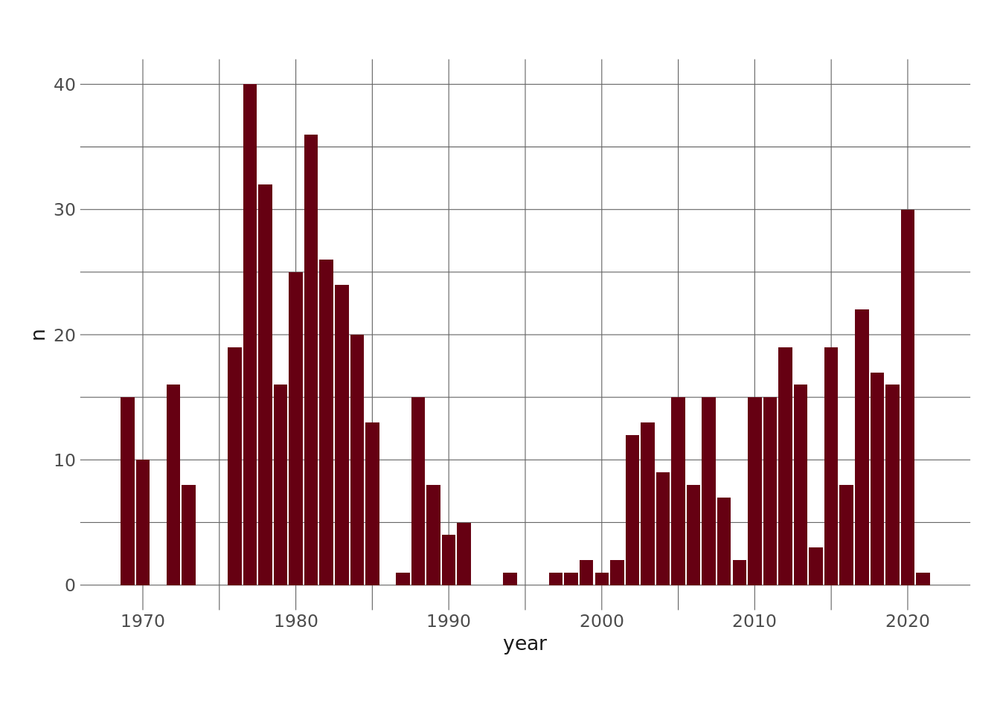

library(tidyverse)
library(eemisc)
library(harrypotter)
library(lubridate)
herm <- harrypotter::hp(n = 1, option = "HermioneGranger")
opts <- options(
ggplot2.discrete.fill = list(
harrypotter::hp(n = 2, option = "HermioneGranger"),
harrypotter::hp(n = 3, option = "HermioneGranger"),
harrypotter::hp(n = 7, option = "Always")
)
)
theme_set(theme_ee())
scooby_raw <- readr::read_csv('https://raw.githubusercontent.com/rfordatascience/tidytuesday/master/data/2021/2021-07-13/scoobydoo.csv', na = c("", "NA", "NULL"))For this week’s (well, really last week’s) #TidyTuesday, I wanted to do a sort of stream-of-consciousness type EDA and modeling that I’ll put up as a blog post. One motivation for this is that I’m considering doing some data science streaming in the future, and so I want to get a feel for whether this is an approach I might be interested in taking with streaming. So, the narrative here might be a bit lacking.
I’m going to shoot for spending an hour-ish on this, but I might end up doing more or less.
What does the data look like?
glimpse(scooby_raw)Rows: 603
Columns: 75
$ index <dbl> 1, 2, 3, 4, 5, 6, 7, 8, 9, 10, 11, 12, 13, 14…
$ series_name <chr> "Scooby Doo, Where Are You!", "Scooby Doo, Wh…
$ network <chr> "CBS", "CBS", "CBS", "CBS", "CBS", "CBS", "CB…
$ season <chr> "1", "1", "1", "1", "1", "1", "1", "1", "1", …
$ title <chr> "What a Night for a Knight", "A Clue for Scoo…
$ imdb <dbl> 8.1, 8.1, 8.0, 7.8, 7.5, 8.4, 7.6, 8.2, 8.1, …
$ engagement <dbl> 556, 479, 455, 426, 391, 384, 358, 358, 371, …
$ date_aired <date> 1969-09-13, 1969-09-20, 1969-09-27, 1969-10-…
$ run_time <dbl> 21, 22, 21, 21, 21, 21, 21, 21, 21, 21, 21, 2…
$ format <chr> "TV Series", "TV Series", "TV Series", "TV Se…
$ monster_name <chr> "Black Knight", "Ghost of Cptn. Cuttler", "Ph…
$ monster_gender <chr> "Male", "Male", "Male", "Male", "Female", "Ma…
$ monster_type <chr> "Possessed Object", "Ghost", "Ghost", "Ancien…
$ monster_subtype <chr> "Suit", "Suit", "Phantom", "Miner", "Witch Do…
$ monster_species <chr> "Object", "Human", "Human", "Human", "Human",…
$ monster_real <lgl> FALSE, FALSE, FALSE, FALSE, FALSE, FALSE, FAL…
$ monster_amount <dbl> 1, 1, 1, 1, 1, 1, 1, 1, 1, 1, 3, 1, 2, 1, 1, …
$ caught_fred <lgl> FALSE, FALSE, FALSE, TRUE, FALSE, TRUE, TRUE,…
$ caught_daphnie <lgl> FALSE, FALSE, FALSE, FALSE, FALSE, FALSE, FAL…
$ caught_velma <lgl> FALSE, FALSE, FALSE, FALSE, FALSE, FALSE, FAL…
$ caught_shaggy <lgl> TRUE, TRUE, FALSE, FALSE, FALSE, FALSE, FALSE…
$ caught_scooby <lgl> TRUE, FALSE, TRUE, FALSE, TRUE, FALSE, FALSE,…
$ captured_fred <lgl> FALSE, TRUE, FALSE, FALSE, FALSE, FALSE, FALS…
$ captured_daphnie <lgl> FALSE, TRUE, FALSE, FALSE, FALSE, FALSE, FALS…
$ captured_velma <lgl> FALSE, TRUE, FALSE, FALSE, FALSE, FALSE, FALS…
$ captured_shaggy <lgl> FALSE, FALSE, FALSE, FALSE, FALSE, FALSE, FAL…
$ captured_scooby <lgl> FALSE, FALSE, FALSE, FALSE, TRUE, FALSE, FALS…
$ unmask_fred <lgl> FALSE, TRUE, TRUE, TRUE, FALSE, TRUE, FALSE, …
$ unmask_daphnie <lgl> FALSE, FALSE, FALSE, FALSE, FALSE, FALSE, FAL…
$ unmask_velma <lgl> FALSE, FALSE, FALSE, FALSE, FALSE, FALSE, FAL…
$ unmask_shaggy <lgl> FALSE, FALSE, FALSE, FALSE, FALSE, FALSE, TRU…
$ unmask_scooby <lgl> TRUE, FALSE, FALSE, FALSE, TRUE, FALSE, FALSE…
$ snack_fred <lgl> TRUE, FALSE, TRUE, FALSE, FALSE, TRUE, FALSE,…
$ snack_daphnie <lgl> FALSE, FALSE, FALSE, TRUE, TRUE, FALSE, FALSE…
$ snack_velma <lgl> FALSE, TRUE, FALSE, FALSE, FALSE, FALSE, TRUE…
$ snack_shaggy <lgl> FALSE, FALSE, FALSE, FALSE, FALSE, FALSE, FAL…
$ snack_scooby <lgl> FALSE, FALSE, FALSE, FALSE, FALSE, FALSE, FAL…
$ unmask_other <lgl> FALSE, FALSE, FALSE, FALSE, FALSE, FALSE, FAL…
$ caught_other <lgl> FALSE, FALSE, FALSE, FALSE, FALSE, FALSE, FAL…
$ caught_not <lgl> FALSE, FALSE, FALSE, FALSE, FALSE, FALSE, FAL…
$ trap_work_first <lgl> NA, FALSE, FALSE, TRUE, NA, TRUE, FALSE, FALS…
$ setting_terrain <chr> "Urban", "Coast", "Island", "Cave", "Desert",…
$ setting_country_state <chr> "United States", "United States", "United Sta…
$ suspects_amount <dbl> 2, 2, 0, 2, 1, 2, 1, 2, 1, 1, 1, 1, 2, 2, 1, …
$ non_suspect <lgl> FALSE, TRUE, TRUE, FALSE, FALSE, FALSE, FALSE…
$ arrested <lgl> TRUE, TRUE, TRUE, TRUE, TRUE, TRUE, TRUE, FAL…
$ culprit_name <chr> "Mr. Wickles", "Cptn. Cuttler", "Bluestone th…
$ culprit_gender <chr> "Male", "Male", "Male", "Male", "Male", "Male…
$ culprit_amount <dbl> 1, 1, 1, 1, 1, 1, 1, 1, 1, 1, 1, 1, 2, 1, 1, …
$ motive <chr> "Theft", "Theft", "Treasure", "Natural Resour…
$ if_it_wasnt_for <chr> NA, NA, NA, NA, NA, NA, NA, NA, NA, NA, "thes…
$ and_that <chr> NA, NA, NA, NA, NA, NA, NA, NA, NA, NA, "dog"…
$ door_gag <lgl> FALSE, FALSE, FALSE, FALSE, FALSE, FALSE, FAL…
$ number_of_snacks <chr> "2", "1", "3", "2", "2", "4", "4", "0", "1", …
$ split_up <dbl> 1, 0, 0, 1, 0, 0, 1, 0, 0, 0, 0, 1, 0, 0, 1, …
$ another_mystery <dbl> 1, 0, 0, 0, 1, 0, 0, 0, 0, 0, 0, 0, 0, 0, 0, …
$ set_a_trap <dbl> 0, 0, 0, 0, 0, 0, 1, 1, 0, 0, 0, 0, 0, 0, 0, …
$ jeepers <dbl> 0, 0, 0, 0, 0, 1, 0, 0, 0, 0, 0, 0, 0, 0, 0, …
$ jinkies <dbl> 0, 0, 0, 0, 0, 0, 0, 0, 0, 0, 0, 0, 0, 0, 0, …
$ my_glasses <dbl> 1, 0, 0, 0, 1, 0, 0, 1, 0, 0, 1, 0, 0, 0, 0, …
$ just_about_wrapped_up <dbl> 0, 0, 0, 0, 0, 0, 0, 0, 0, 0, 0, 0, 0, 0, 0, …
$ zoinks <dbl> 1, 3, 1, 2, 0, 2, 1, 0, 0, 0, 0, 6, 3, 5, 8, …
$ groovy <dbl> 0, 0, 2, 1, 0, 0, 1, 0, 0, 0, 0, 1, 0, 0, 0, …
$ scooby_doo_where_are_you <dbl> 0, 1, 0, 0, 1, 0, 0, 1, 0, 2, 0, 0, 0, 1, 0, …
$ rooby_rooby_roo <dbl> 1, 0, 0, 0, 0, 1, 1, 1, 1, 0, 1, 3, 0, 0, 0, …
$ batman <lgl> FALSE, FALSE, FALSE, FALSE, FALSE, FALSE, FAL…
$ scooby_dum <lgl> FALSE, FALSE, FALSE, FALSE, FALSE, FALSE, FAL…
$ scrappy_doo <lgl> FALSE, FALSE, FALSE, FALSE, FALSE, FALSE, FAL…
$ hex_girls <lgl> FALSE, FALSE, FALSE, FALSE, FALSE, FALSE, FAL…
$ blue_falcon <lgl> FALSE, FALSE, FALSE, FALSE, FALSE, FALSE, FAL…
$ fred_va <chr> "Frank Welker", "Frank Welker", "Frank Welker…
$ daphnie_va <chr> "Stefanianna Christopherson", "Stefanianna Ch…
$ velma_va <chr> "Nicole Jaffe", "Nicole Jaffe", "Nicole Jaffe…
$ shaggy_va <chr> "Casey Kasem", "Casey Kasem", "Casey Kasem", …
$ scooby_va <chr> "Don Messick", "Don Messick", "Don Messick", …What’s the range of dates we’re looking at here?
range(scooby_raw$date_aired)[1] "1969-09-13" "2021-02-25"And how many episodes are we seeing each year?
scooby_raw %>%
count(year(date_aired)) %>%
rename(year = 1) %>%
ggplot(aes(x = year, y = n)) +
geom_col(fill = herm)
What about episodes by decade?
scooby_raw%>%
count(10*year(date_aired) %/% 10) %>%
rename(decade = 1) %>%
ggplot(aes(x = decade, y = n)) +
geom_col(fill = herm)Next, let’s look at what ratings look like over time:
scooby_raw %>%
ggplot(aes(x = index, y = imdb)) +
geom_point() +
geom_line() +
geom_smooth()And what if we color the points by series – I’d imagine series might have different ratings:
scooby_raw %>%
ggplot(aes(x = index, y = imdb)) +
geom_point(aes(color = series_name)) +
geom_line(color = "grey70") +
theme(legend.position = "none")Next, I’m interested in looking at some comparisons across characters for different actions they take, like unmasking baddies, getting caught, etc. There are a bunch of these logical columns (e.g. unmask_fred), and so I’ll write a little helper function to summarize them and then pivot them into a shape that’ll be easier to plot later.
summarize_pivot <- function(df, str) {
df %>%
summarize(across(starts_with(str), ~sum(.x, na.rm = TRUE))) %>%
pivot_longer(
cols = everything(),
names_to = "key",
values_to = "value"
) %>%
extract(col = key, into = c("key", "char"), regex = "^(.*)_(.*)$") %>%
arrange(desc(value))
}An example of what this does:
scooby_raw %>%
summarize_pivot("unmask")# A tibble: 6 × 3
key char value
<chr> <chr> <int>
1 unmask fred 102
2 unmask velma 94
3 unmask daphnie 37
4 unmask other 35
5 unmask scooby 23
6 unmask shaggy 13Aaaand another example:
scooby_raw %>%
summarize_pivot("caught")# A tibble: 7 × 3
key char value
<chr> <chr> <int>
1 caught scooby 160
2 caught fred 132
3 caught other 84
4 caught shaggy 77
5 caught velma 41
6 caught not 31
7 caught daphnie 29Next, let’s use purrr::map() to do this a few times, combine the results into a df, and then make a plot
iter_strs <- c("caught", "captured", "unmask", "snack")
actions_df <- map_dfr(iter_strs, ~summarize_pivot(scooby_raw, .x))
glimpse(actions_df)Rows: 23
Columns: 3
$ key <chr> "caught", "caught", "caught", "caught", "caught", "caught", "cau…
$ char <chr> "scooby", "fred", "other", "shaggy", "velma", "not", "daphnie", …
$ value <int> 160, 132, 84, 77, 41, 31, 29, 91, 85, 83, 74, 71, 102, 94, 37, 3…actions_df %>%
ggplot(aes(x = value, y = char, fill = key)) +
geom_col() +
facet_wrap(vars(key), scales = "free_y") +
theme(
legend.position = "none"
)Right, so we see that all of the characters get captured more or less the same amount, Fred and Scooby tend to catch monsters the most, Daphnie and Shaggy eat the most snacks, and Velma and Fred do the most unmasking.
Switching up a bit, what if we want to look at monster’s motives? First let’s take a look at all of the unique motives.
unique(scooby_raw$motive) [1] "Theft" "Treasure" "Natural Resource" "Competition"
[5] "Extortion" "Safety" "Counterfeit" "Inheritance"
[9] "Smuggling" "Preservation" NA "Experimentation"
[13] "Food" "Trespassing" "Assistance" "Abduction"
[17] "Haunt" "Anger" "Imagination" "Bully"
[21] "Loneliness" "Training" "Conquer" "Mistake"
[25] "Automated" "Production" "Entertainment" "Simulation" And it’s probably useful to count these:
scooby_raw %>%
count(motive, sort = TRUE)# A tibble: 28 × 2
motive n
<chr> <int>
1 Competition 168
2 Theft 125
3 <NA> 67
4 Treasure 54
5 Conquer 42
6 Natural Resource 26
7 Smuggling 22
8 Trespassing 15
9 Abduction 12
10 Food 11
# … with 18 more rowsSo, “Competition” is far and away the most common motive. I’m not sure I really understand what this means? But it’s also been a while since I’ve watched Scooby Doo.
I’m also interested in how often we see “zoinks” in episodes, bc I feel like this is the defining line of the show (along with the meddling kids, which I’ll look at next).
scooby_raw %>%
ggplot(aes(x = zoinks)) +
geom_histogram(bins = 20, fill = herm)This feels weird to me. Most often, we get 0 or 1, but then there are episodes with more than 10? I’d imagine these are probably movies?
scooby_raw %>%
ggplot(aes(x = zoinks)) +
geom_histogram(bins = 10, fill = herm) +
facet_wrap(vars(format), scales = "free_y")Well, so, there are still some TV shows that have a ton of zoinks’s. But also our biggest outlier is a movie, which makes sense to me since there’s more time for zoinking.
And what about our “if it wasn’t for those meddling kids” data?
length(unique(scooby_raw$if_it_wasnt_for))[1] 108Ok, wow, so that’s a lot of different values for “if it wasn’t for…”
First, let’s just see how many episodes have the “if it wasn’t for…” catchphrase
scooby_raw %>%
mutate(has_catchphrase = if_else(!is.na(if_it_wasnt_for), TRUE, FALSE)) %>%
count(has_catchphrase)# A tibble: 2 × 2
has_catchphrase n
<lgl> <int>
1 FALSE 414
2 TRUE 189Cool, so, 189 of our 603 episodes have the “if it wasn’t for…” catchphrase.
And now which of these also use the term “meddling?”
scooby_raw %>%
filter(!is.na(if_it_wasnt_for)) %>%
mutate(meddling = if_else(str_detect(if_it_wasnt_for, "meddling"), TRUE, FALSE)) %>%
count(meddling) %>%
ggplot(aes(x = n, y = meddling)) +
geom_col(fill = herm) +
geom_text(aes(label = n, x = n - 1), hjust = 1, color = "white")Alright, so, of the 189 episodes that have the “if it wasn’t for…” catchphrase, most of those also include the word “meddling!”
The last little bit here – because I’m trying to keep my time to about an hour (again, to test out the feel for if this is a viable approach to streaming or making videos), is going to be to fit a quick linear model predicting the imdb rating of an episode.
library(tidymodels)Let’s just use numeric/logical columns in our model, mostly because preprocessing them is pretty straightforward (although note that this doesn’t mean what I’m doing below is anywhere near the best approach). Then let’s look at how much missing data we have for each of these columns.
mod_df <- scooby_raw %>%
select(where(is.numeric) | where(is.logical)) %>%
filter(!is.na(imdb))
miss_df <- mod_df %>%
summarize(across(everything(), ~(sum(is.na(.x))/length(.x))))
miss_df# A tibble: 1 × 51
index imdb engagement run_time monster_amount suspects_amount culprit_amount
<dbl> <dbl> <dbl> <dbl> <dbl> <dbl> <dbl>
1 0 0 0 0 0 0 0
# … with 44 more variables: split_up <dbl>, another_mystery <dbl>,
# set_a_trap <dbl>, jeepers <dbl>, jinkies <dbl>, my_glasses <dbl>,
# just_about_wrapped_up <dbl>, zoinks <dbl>, groovy <dbl>,
# scooby_doo_where_are_you <dbl>, rooby_rooby_roo <dbl>, monster_real <dbl>,
# caught_fred <dbl>, caught_daphnie <dbl>, caught_velma <dbl>,
# caught_shaggy <dbl>, caught_scooby <dbl>, captured_fred <dbl>,
# captured_daphnie <dbl>, captured_velma <dbl>, captured_shaggy <dbl>, …So, some of these columns have a ton of missing data. Just to keep moving forward on this, I’m going to chuck any columns with more than 20% missing data, then median impute cases with missing data in the remaining columns (which we’ll do in the recipes step below).
keep_vars <- miss_df %>%
pivot_longer(cols = everything(),
names_to = "nms",
values_to = "vals") %>%
filter(vals < .2) %>%
pull(1)
mod_df <- mod_df %>%
select(all_of(keep_vars)) %>%
mutate(across(where(is.logical), as.numeric))Now we’ll set up some bootstrap resamples. I’m using bootstrap resamples here rather than k-fold because it’s a relatively small dataset.
set.seed(0408)
booties <- bootstraps(mod_df, times = 10)And then let’s define some very basic preprocessing using a recipe:
rec <- recipe(imdb ~ ., data = mod_df) %>%
step_impute_median(all_numeric_predictors()) %>%
step_normalize(all_numeric_predictors()) And let’s do a lasso regression, just using a small and kinda of arbitrary penalty value (we could tune this, but I’m not going to).
lasso_spec <- linear_reg(mixture = 1, penalty = .001) %>%
set_engine("glmnet")
#combining everything into a workflow
lasso_wf <- workflow() %>%
add_recipe(rec) %>%
add_model(lasso_spec)And now let’s fit!
lasso_res <- fit_resamples(
lasso_wf,
resamples = booties
)The main reason for fitting on these resamples is to check our model performance, so let’s do that.
collect_metrics(lasso_res)# A tibble: 2 × 6
.metric .estimator mean n std_err .config
<chr> <chr> <dbl> <int> <dbl> <chr>
1 rmse standard 0.626 10 0.0104 Preprocessor1_Model1
2 rsq standard 0.280 10 0.0165 Preprocessor1_Model1Our R-squared is .29, which isn’t great, but it’s also not terrible considering we really didn’t put much effort into our preprocessing here, and we discarded a bunch of data.
Let’s fit one final time on the full dataset to look at the importance of our predictor variables:
prepped_df <- rec %>%
prep() %>%
bake(new_data = NULL)
mod_fit <- lasso_spec %>%
fit(imdb ~ ., data = prepped_df)And then finally we can look at our coefficients.
mod_fit %>%
tidy() %>%
filter(term != "(Intercept)") %>%
arrange(desc(abs(estimate))) %>%
ggplot(aes(x = estimate, y = fct_reorder(term, abs(estimate)), fill = estimate >= 0)) +
geom_col() +
labs(
y = NULL
)And there we go. That was a bit more than an hour, but it was worth it to get to a reasonable stopping point!
Reuse
Citation
BibTeX citation:
@online{ekholm2021,
author = {Ekholm, Eric},
title = {Scooby {Doo} {EDA}},
date = {2021-07-20},
url = {https://www.ericekholm.com/posts/scooby-doo-eda},
langid = {en}
}
For attribution, please cite this work as:
Ekholm, Eric. 2021. “Scooby Doo EDA.” July 20, 2021. https://www.ericekholm.com/posts/scooby-doo-eda.